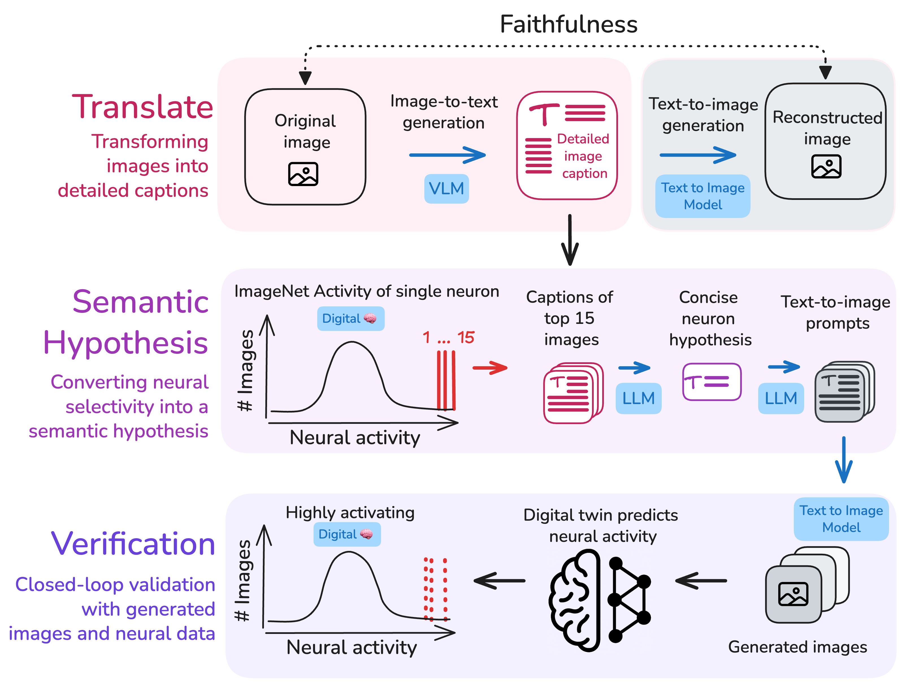

Training the digital twin. A deep network learns to map natural images to the recorded spiking responses of real neurons, yielding an in-silico model that reproduces each neuron's selectivity and can be queried with arbitrary stimuli.
Stanford University · 2026
Artificial intelligence promises a future of automated scientific discovery, but it remains unclear how this will transform neuroscience, or how to even begin verifying its findings. We take a first step toward both by adapting automated interpretability to neuroscience, where those claims can be put to the test: we study "digital twins" of visual cortex—deep learning models trained to predict the responses of individual neurons. Using these models, we present a three-stage framework that translates single-neuron selectivity into verifiable, interpretable semantic descriptions, bridging neural data, vision, and language, and presenting a proof of concept for automated scientific discovery with humans in the loop.
Stanford University · University of Tübingen · MIT †Equal senior contribution
Motivation
The classical view of a visual neuron is a feature detector: it fires when its preferred stimulus appears, and remains largely silent otherwise. In early visual cortex (V1), this view has been remarkably productive. These neurons behave much like oriented edge filters, and what drives them is captured by a handful of parameters. But the classical feature detector picture says little about the other side of a neuron's behavior, what silences it.
Moving up the visual hierarchy, to midlevel visual cortex (V4), even the excitatory side gets harder to pin down. Neurons respond to complex conjunctions of shape, color, and texture. We know this from decades of painstaking experiments, each testing a hand-crafted hypothesis about what a single neuron might prefer. The approach works, but it doesn't scale, and it has not produced a general vocabulary for selectivity. We believe natural language can help fill that gap.
Deep learning has already changed what's possible. A network trained on a neuron's responses to thousands of natural images can predict its response to almost any new image with high accuracy. These "digital twins" of visual cortex let us screen millions of images in seconds, and probe not just what drives a neuron, but what suppresses it.
But knowing which images drive a neuron isn't the same as knowing what it's tuned for. The digital twin is accurate, yet silent on the thing we actually want: an interpretable description of what the neuron encodes.
Foundation
The architecture is simple. A convolutional network turns an image into features, and a small learned readout maps those features onto the predicted firing rate of a single biological neuron. Trained on high-resolution recordings from macaque V1 and V4, these models generalize well to images the neuron has never seen.
Using this approach, we recently found that the most activating images for a given neuron are perceptually coherent, clustering around a consistent visual feature. So are the least activating images, for neurons with high baseline firing rates (non-sparse neurons). For more on the recordings and digital twin architecture underlying this work, see Franke & Karantzas et al., 2025.
Training the digital twin. A deep network learns to map natural images to the recorded spiking responses of real neurons, yielding an in-silico model that reproduces each neuron's selectivity and can be queried with arbitrary stimuli.
Explore
Across the activation range of non-sparse neurons, responses are graded rather than binary. The images that most strongly drive a neuron share a coherent visual theme, and for neurons with high baseline firing rates, so do the images that most strongly suppress it. Each extreme defines its own structured feature pole. More examples are available on the Dual Feature Selectivity website, where the selectivity axis can be explored interactively.
Method
The core challenge: given a model that predicts a neuron's responses, how do we get from the images that drive it to what it's tuned for? Our answer is a three-stage closed loop.
01
Each image is converted into a dense textual description by Gemini 3.0 Pro, precise enough to reconstruct the original stimulus from text alone, specifying colors, textures, spatial layout, and lighting rather than falling back on category labels.
02
Captions of a neuron's most- and least-activating images are synthesized into a single concise hypothesis: what visual features drive this neuron, what suppresses it, and what can vary without changing the response.
03
The hypothesis is converted into novel images via text-to-image generation and tested against the digital twin. If generated images drive the neuron as predicted, the hypothesis is validated, turning description into evidence.

Framework overview. The pipeline translates neural selectivity into semantic hypotheses and validates them through generative testing. Each stage is automated and scalable to hundreds of neurons.
Stage 1
Rather than comparing images directly, we first convert each one into an exhaustive text caption specifying precise colors, textures, spatial arrangements, and lighting conditions. Language models are far more reliable at finding patterns across many descriptions than vision models are across raw images, particularly when the relevant features don't correspond to clean semantic categories. We confirm that these captions are faithful with a text-to-image round-trip test: images regenerated from a caption are consistently more similar to the original than to unrelated images, so little visually relevant information is lost in translation.


Caption faithfulness. A round-trip reconstruction test confirms that dense captions preserve visually relevant information. Images synthesized from captions are consistently more similar to their originals than to unrelated images in DINO embedding space.
Stage 2
With captions in hand for a neuron's most- and least-activating images, a language model identifies the theme that unifies each set and writes a concise, testable claim for each: what drives the neuron, and, for neurons with a high baseline firing rate, what suppresses it. In V1, these descriptions recover the canonical vocabulary of early visual cortex: oriented edges, spatial frequency, and contrast polarity, without any visual neuroscience built in. In V4, they capture richer conjunctions of curvature, color, and texture, including object-like structures such as eye-shaped forms set against organic backgrounds.
Because it recovers these known V1 properties on its own, the pipeline passes a positive control: it works where the answer is largely known, before it is trusted where the answer is not. The figures below focus on the richer V4 case; the full V1 results and figures are reported in the paper.

V4 semantic hypotheses. Top-activating images are identified via the digital twin and their captions distilled into interpretable selectivity descriptions. Examples show diverse feature conjunctions including eye-like structures, curved edges, and textured surfaces.
Stage 3
A semantic hypothesis is a guess in words. To trust it, we have to be able to check it. Each hypothesis is converted into image prompts, rendered by a text-to-image model, and evaluated by the digital twin. The results substantially outperform the random-image baseline, suggesting the semantic content of the hypothesis captures genuine selectivity rather than an artifact of the image generation process. Crucially, this loop runs entirely in silico: generated images are tested against the digital twin, never shown to the brain itself.

V4 verification. Hypothesis-generated images resemble original most-activating stimuli and, after spatial optimization, drive neurons to extreme response percentiles. Control analysis with random images confirms that semantic content, not spatial search alone, is necessary.
| Condition | Threshold | n | Semantic (%) | Null (%) |
|---|---|---|---|---|
| Excitatory (MEI) | >90th | 205 | 99.5 | 33.2 |
| >95th | 205 | 96.1 | 8.8 | |
| >99th | 205 | 84.4 | 0.0 | |
| Suppressive (LEI) | <10th | 166 | 99.4 | 45.2 |
| <5th | 166 | 97.6 | 13.3 | |
| <1st | 166 | 78.9 | 0.0 |
Cross-modal alignment
Describing individual neurons is one thing. But if language truly captures neural selectivity, it should also reflect how neurons relate to each other. Neurons with similar tuning should end up with similar descriptions. We tested this using representational similarity analysis, asking whether neuron-to-neuron similarity patterns in neural activity space are preserved in language embedding space.
They are, partially. Neural activity aligns strongly with visual feature embeddings (r = 0.52 in V4) and more modestly with language (r = 0.36). Text is a lossy compression of the visual signal, but faithful enough that images regenerated from hypotheses largely restore the alignment (r = 0.49). The descriptions are consistent enough across the population to preserve the structure of the neural code through a different modality.

Cross-modal alignment. RSMs across six embedding spaces show consistent block structure. Image–caption alignment is strongest (r = 0.67), and neural responses to hypothesis-generated images preserve the original selectivity structure (r = 0.49 in V4).
Population structure
Projecting V4 neurons into two dimensions using population activity similarity and annotating each with keywords from its semantic hypothesis reveals smooth transitions across the embedding. Neighborhoods contain neurons whose descriptions share vocabulary. Individual neurons tile localized, semantically coherent regions. Language embeddings can serve as a coordinate system for navigating neural selectivity space: rather than characterizing neurons one at a time, we can identify functional clusters, interpolate between known tuning profiles, and predict which neurons should respond to novel feature combinations.

Semantic structure of neural selectivity. Left: UMAP embedding annotated with nouns and adjectives from each neuron's hypothesis, showing smooth transitions from eyes and organic forms to geometric textures. Right: Individual neurons tile localized, semantically coherent regions with smoothly varying activation.
Interactive
Neurons are embedded by the similarity of their population responses and labeled by the TF–IDF of their semantic hypotheses, so each region of the map is named by the words that most distinguish it.
Scrub around the embedding to follow the axis of selectivity—watch how the perceptual features in the images shift continuously as you move across neighborhoods.
Per neuron
The same population embedding, now colored by one neuron's response across the entire map. Warm tones mark the regions that most excite the neuron; cool tones mark the regions that most suppress it. Switch between neurons below.
Each neuron paints the map differently. Switching between them, can you tell what visual feature each one is tuned for?
Conclusions
For most neurons in macaque areas V1 and V4, selectivity is expressible in words precisely enough to generate new images that push the neuron's predicted response to either extreme, driving it or suppressing it. The approach requires no prior domain knowledge, which matters for where neuroscience is heading. Large-scale recording technologies are opening access to cortical areas with no established stimulus vocabulary, and a framework that operates on arbitrary natural-image responses and returns testable descriptions is well suited for discovery in exactly those regions.
The natural next step is a fully agentic workflow, where experimental outcomes drive decisions about what to probe next, iterating toward a hypothesis rather than generating one in a single pass. Digital twins make that inner loop cheap: an agent can query predicted responses to arbitrary stimuli at negligible cost, running hypothesis generation entirely in silico before any biological experiment is needed. This is where models become real partners in discovery. Here we characterize neurons at a scale no experiment could reach, so that the human work, asking the right questions and making sense of the answers, can go further than it could alone.
Reference
If you find this work useful, please cite:
@article{lad2026letting,
title = {Letting the neural code speak: Automated
characterization of monkey visual neurons
through human language},
author = {Lad, Vedang and Franke, Katrin and
Rott Shaham, Tamar and Ganguli, Surya and
Tolias, Andreas and Sanborn, Sophia and
Karantzas, Nikos},
journal = {arXiv preprint},
year = {2026}
}